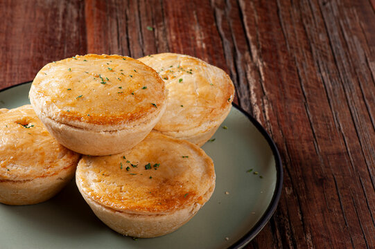

Receita de Empadinha de Frango Fácil

Ingredientes:
- Massa pronta para empadinha (pode ser comprada pronta)
- 200g de peito de frango cozido e desfiado
- 1 cebola pequena picada
- 2 dentes de alho picados
- 1 colher de sopa de azeite de oliva
- 1/2 xícara de milho verde em conserva
- 1/2 xícara de ervilha em conserva
- 1/2 xícara de requeijão cremoso
- Sal e pimenta a gosto
- 1 gema batida (para pincelar)
Modo de Preparo:
- Em uma panela, refogue a cebola e o alho no azeite até dourarem.
- Adicione o frango desfiado e refogue por mais alguns minutos.
- Acrescente o milho e a ervilha, misture bem.
- Junte o requeijão cremoso, tempere com sal e pimenta a gosto, e misture até obter uma mistura homogênea e cremosa.
- Forre forminhas de empadinha com a massa, distribua o recheio entre elas e feche com mais massa por cima.
- Pincele a gema batida sobre as empadinhas.
- Leve ao forno preaquecido a 180°C por aproximadamente 30 minutos, ou até que fiquem douradas.
- Sirva quente.